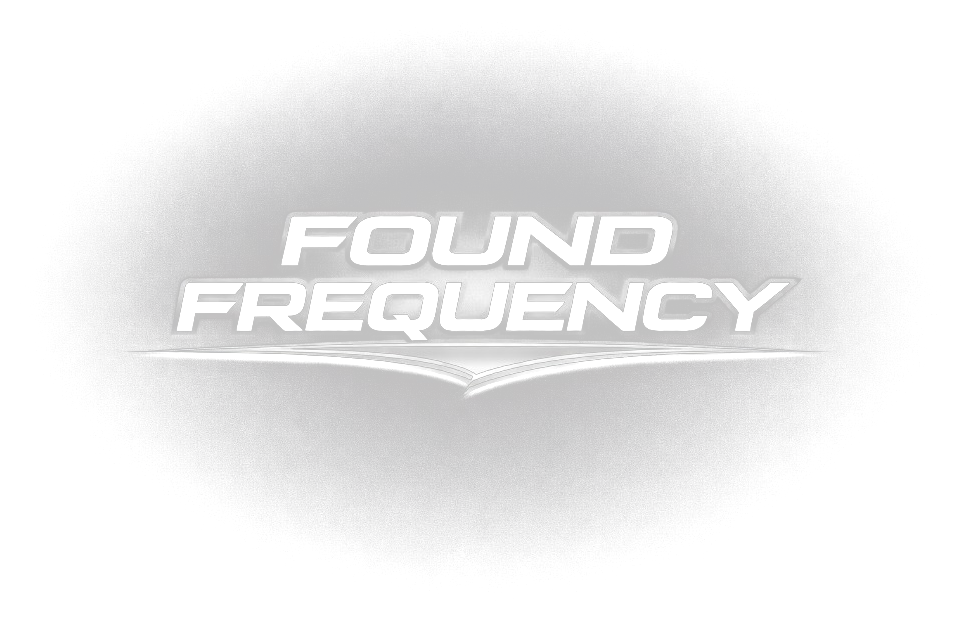

a chicago-to-milwaukee bass collective. dubstep, riddim, bass house, and anything else that hits sub 40hz.
why we exist
found frequency started because getting noticed shouldn't take a bunch of hoops. we built a place for DJs, producers, and creatives to actually connect, learn from each other, and get real stage time — no gatekeeping, no politics, just people who love this music putting each other on.
right now that means recurring shows across the Chicago area, a growing roster of artists, and nights people keep coming back for. the full site — artist bios, show archives, the whole thing — is coming. this page is just the placeholder while we build it right.
reach out
booking a show, looking to join the crew, or just want to talk sound system specs? the inbox works even if the site isn't finished yet.